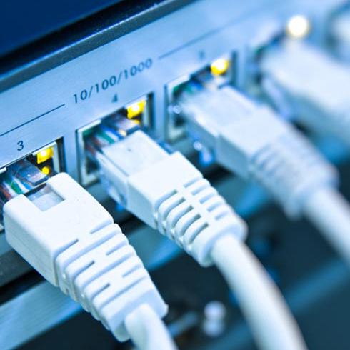

ConclInfo
Formatação de PCs, Notebooks e Netbooks, configuração de Internet e Redes, manutenção de Hardware em PCs e Note/Net. Saiba mais aqui
Assistência Técnica em Informática
Redes e Internet

O mundo digital, a partir da internet, tem causado uma ruptura com o mundo analógico, trazendo uma segregação tanto de quem imerge na esfera digital quanto de quem não tem o acesso. A segregação não parte só de quem fica de fora desta nova esfera, mas de quem está dentro, pois é notável um uso exacerbado por parte do usuário. Uso exacerbado entende-se aquele que tanto depende e passa horas a fio (ou sem fio), quase que se esquecendo da realidade analógica. Este é um cenário que vem crescendo, ainda mais com o fenômeno da inclusão digital. As vantagens do mundo digital são extensas e uma em destaque é a navegação com certo anonimato; possibilidade de ser uma pessoa descolada e fluente enquanto na vida analógica é apenas um avesso social. O anonimato, por sinal, é tanto benéfico como maléfico, é o poder de expressar, realizar e trocar informações que podem ser inclusive ilegais. Esta aparente 'liberdade' é como um vício, e muitos indivíduos quando entram dificilmente saem, pois sabem que o local é 'privilegiado'. A internet é um meio gigantesco e cresce como o universo real, são milhares de terabytes em expansão disponíveis a quem navega. Porém, o fenômeno deve ser tomado com cuidado, pois a vida digital está em vias de sobrepujar a analógica. O uso racional é bom podendo-se dizer necessária nos dias atuais, no entanto, há de saber limitar, pois o uso extenso leva a uma desconexão com a vida analógica, diminuindo os prazeres, produtividade e sensibilidade humana.
Montagem de Hardware
Montar um PC pode ser uma tarefa recompensadora: você escolhe os componentes de acordo com seu orçamento e necessidade, de marcas nas quais você confia, e no final das contas tem uma máquina que “é a sua cara”. Mas o processo, embora não seja tão complicado quanto parece, exige alguns cuidados. É verdade que a maioria dos componentes de um PC só pode ser instalada de um jeito, ou em um tipo específico de slot, mas há nuances no processo que só os “montadores” mais experientes conhecem bem. Portanto, mostraremos a seguir alguns dos problemas mais comuns que podem acontecer quando você está instalando um processador, dissipador de calor, placa-mãe, memória, placa de vídeo, disco rígido ou fonte de alimentação. Imprima este artigo e coloque-o perto da bancada, para que você tenha acesso fácil às “melhores práticas” na montagem de um PC.
Formatação e Instalação

A formatação de computadores é o ganha pão da maioria dos que se dizem técnicos em informática por aí. Independente do problema, a solução para estes sempre é a formatação ou aconselhar o cliente a trocar de computador quando o problema é algo que uma simples instalação de sistema não possa resolver. Aí você leva seu computador todo queridinho ao técnico, ele faz “aquela” formatação com todos os seus programas favoritos instalados e seus arquivos intactos e eis que seu computador está perfeito (ou não). Talvez até com um sistema mais atual do que aquele que você usava. Mas o que foi feito exatamente? Foi formatado, foi instalado um novo sistema, ou os dois?
Sempre vejo “técnicos” que usam o mesmo termo para falar de coisas distintas e muitas das vezes não sabem ao menos diferenciar uma da outra. Instalação de sistema operacional e formatação são processos que podem depender um do outro, mas necessariamente não são a mesma coisa. Calma que explicarei resumidamente o que são cada um dos termos.
Endereço: Rua Vinte e Quatro de Maio, Porto Alegre - Rio Grande do Sul - Brasil
Gmail:conclinfo@gmail.com
Facebook:www.facebook.com/ConclInfo
Instagram:@ConclInfo
Telefone: +55(51)98029-0967